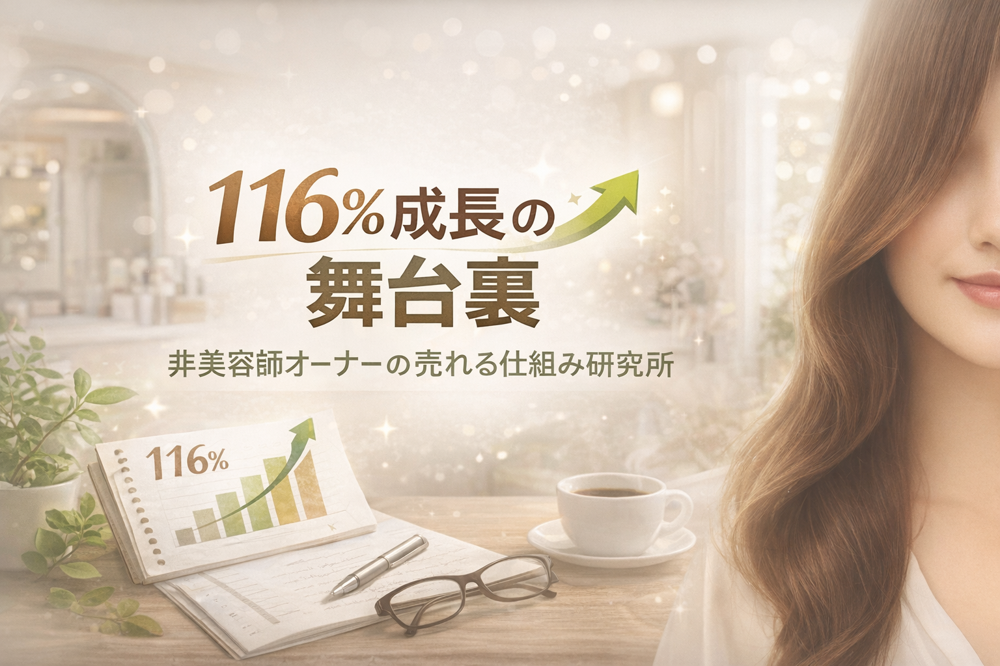

116％成長の舞台裏｜
非美容師オーナーの売れる仕組み研究所
技術ではなく、仕組みで売上は変わる。
小規模サロンのための、伝え方・見せ方・仕組みづくりを研究しています。
直近5年黒字。昨年は前年比116％。
ハサミを持たない経営者だからこそ見えてきた「伝え方」の視点を発信しています。

116％成長の舞台裏にあったのは、
技術ではなく、仕組みと伝え方でした。
こんなお悩みのある方へ
何をどう伝えればいいか分からない
メニューや店販の価値を、言葉にするのが難しいと感じている方へ。
技術やこだわりが伝わっていない
良いものを使っていても、お客様に違いが届いていないと感じる方へ。
小さな改善で数字を動かしたい
大きな投資ではなく、今ある価値を活かして見せ方を整えたい方へ。
この研究所で発信していること
伝え方
価格ではなく価値で選ばれるための、言葉の整え方。
見せ方
POP・置き場所・導線など、お客様に届きやすくする工夫。
仕組みづくり
小規模サロンでも続けやすい、再現性のある改善の積み重ね。
売れる言葉設計POPツール
「何を書けばいいか分からない」から始められる、
美容室オーナー向けの実践ツールです。
- 商品名や特徴を入れるだけで土台を作れる
- まず置いてみるためのPOPが形になる
- 反応を見ながら改善しやすい
まずは「置く」ことから
完璧なPOPを目指すより、まず1枚作って店内に置いてみる。
反応を見てから改善する方が、ムダなく前に進めます。
実践の中で見えてきたこと
美容室はメニューが似ています。
だから「あります」だけでは選ばれません。
私が変えたのは技術ではなく、
その価値をどう伝え、どう見せるかでした。
まず作る。まず置く。反応を見る。少し直す。
この積み重ねが、後から大きな差になります。
研究ノート
美容室は技術だけでは選ばれない
お客様に伝わる見せ方が必要な理由。
売れるPOPは、最初から完璧じゃない
大事なのは「まず置いてみる」こと。
美容室のPOPは何を書けばいい？
最初に入れるべき3つの要素。